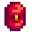
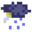
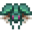
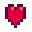
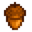

現在このWikiにはConcernedApeによって開発されたカントリーライフRPG、スターデューバレーに関する記事が1,967本投稿されています。
Deutsch • English • Español • Français • Italiano • 日本語 • 한국어 • Magyar • Português • Русский • Türkçe • 中文
スターデューバレーはオープンエンド式のカントリーライフRPGです。「スターデュー バレー」で、プレイヤーは祖父から古い農場を受け継ぎます。使い古された道具と少しのお金を手に、新たな生活を始めましょう。自給自足の生活で生き抜く術を学び、草木の生い茂る土地を繁栄させることができるでしょうか？もちろん簡単ではありません。Jojaコーポレーションが町に来てからというもの、古いやり方は通用しなくなってしまいました。かつて町の中心部として栄えた公民館は今や荒れ放題。でも、谷にはたくさんのチャンスが溢れているようです。ほんの少しの頑張りで、スターデュー バレーを元の元気な谷に戻せるかもしれません！
スタートガイド
キャラクター作成
操作方法
エナジー
体力
スキル
1日の流れ
 持ち物
牧場レイアウト
作物
出荷
動物
果樹
加工品
家
洞窟
温室
小屋
 天気
季節
イベント
 モンスター
テレビ
住人
友好度
 結婚
子ども
クエスト
バンドル
実績
マルチプレイヤー
ゲーム改造
どうぐ
武器
帽子
はき物
指輪
採取
魚
釣りエサ
釣り具
肥料
料理
クラフト
 樹木
ひみつのメモ
財布
発掘品
鉱物
家具
壁紙
フローリング
ペリカンタウン
シンダーサップの森
ビーチ
山
カリコ砂漠
ジンジャーアイランド